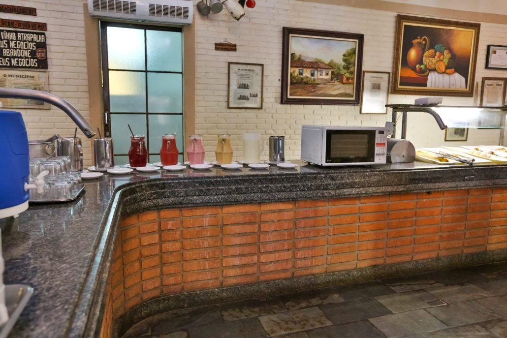

Fotos
GASTRONOMIA REGIONAL
Café da Manhã
Muita energia pra você!
O café da manhã é reforçado e com diversas opções deliciosas, entre elas pães caseiros, pão de queijo quentinho, bolos, bolachas, frios, frutas, sucos, leite e café produzido na própria fazenda.

Almoço
Tudo fresquinho direto da fazenda!
Nosso almoço tem aquele delicioso sabor da fazenda. Oferecemos diariamente diversos pratos típicos, além das saladas com bastante variedade de folhas e legumes, tudo produzido e colhido da horta do próprio hotel.

CAFÉ DA TARDE
Delícias do meio da tarde!
No café caipira é hora de repor as energias. Por isso preparamos para nossos clientes milho cozido, bolo de fubá, amendoim torrado, pipoca, além dos pães caseiros, bolinho de chuva, frios, leite, café… tudo bem fresquinho.
JANTAR
pra terminar o dia bem…
E depois de bastante atividade, nada melhor do que um jantar gostoso para terminar bem o dia. Servimos diversas opções de pratos tudo com gostinho da fazenda, além das sopas deliciosas para os dias mais frios. É irresistível!!